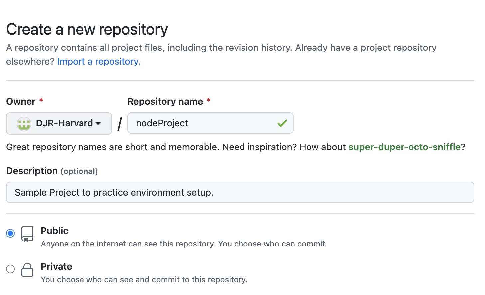
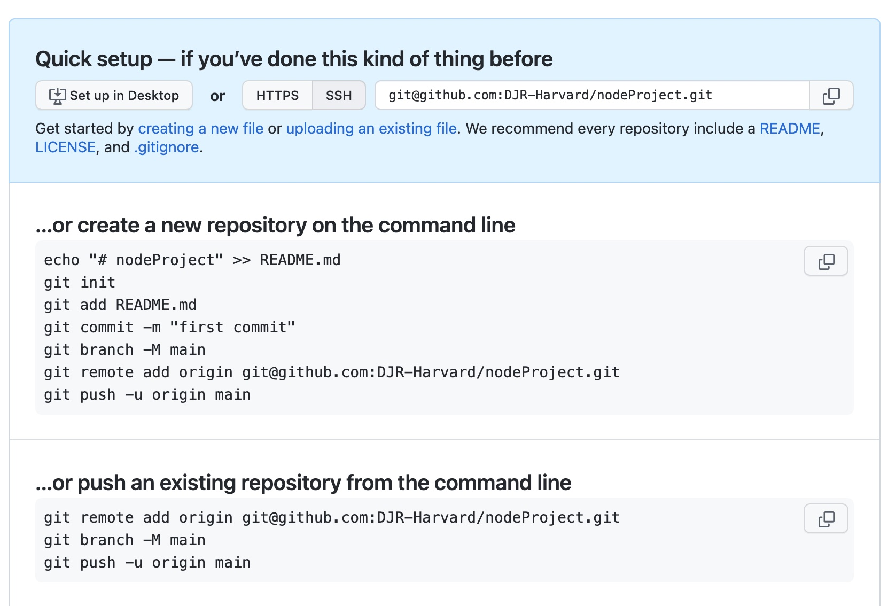
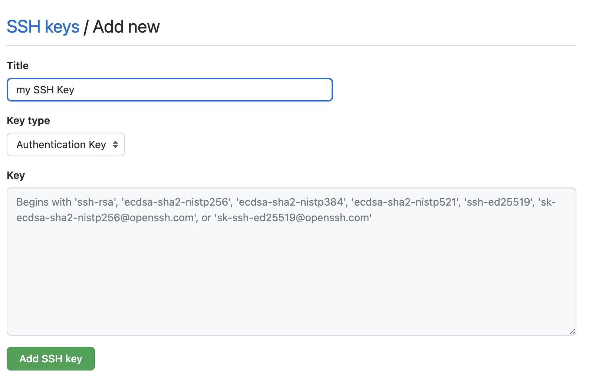
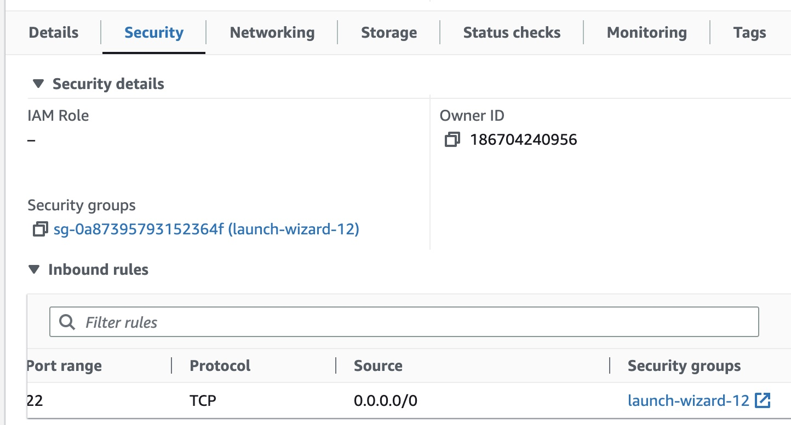
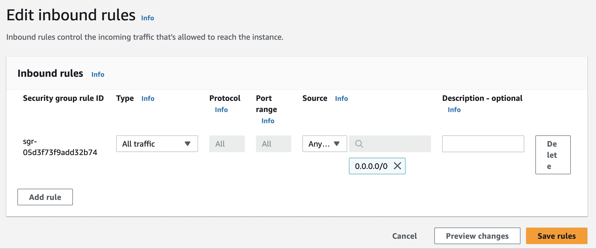

My Github and AWS EC2 Tutorial b
Getting Started with Github
Summary: In this section, we will learn the basics of using Github for version control.
- Create your account if necessary at https://github.com
- Create a new repository at https://github.com/new
- Once your repository is created, you are directed to the "code" tab within your repository. It can be helpful to take note of the sample git commands provided. See screenshot for an example.


Local Environment Setup
Summary: In this section, we will set up our local environment for web development.
-
Open your terminal and create a new directory for your project. Change into the new directory.
mkdir nodeProject
cd nodeProject - If you haven't installed node already, do so now. Download here https://nodejs.org/en
-
Make sure you gave git installed locally. On a mac, open your terminal and use the following command:
brew install git -
If this is your first time using git, you will need to configure your username and email with the following commands:
git config --global user.name "Your Name"
git config --global user.email "your_email@example.com" - Generate SSH keys locally and copy your public key to GitHub so you can push and commit your changes to github.
ssh-keygen -t rsa -b 4096 -C "your_email@example.com"
cat ~/.ssh/id_rsa.pub
Your public key is now displayed in your terminal. Copy it so it can be pasted into github. - Navigate to https://github.com/settings/ssh/new. Give your key a title and paste the key in the form as shown in the screenshot.
-
Validate your SSH key is set up correctly. From your terminal run the following command:
ssh -T git@github.com -
Initialize git locally. Create a readme file and push to github to validate everything is working. Open your terminal and run the follwing commands:
echo “# demoProject name” >> README.md
git init
git add README.md
git commit -m “first commit”
git branch -M main
git remote add origin git@github.com:{Your github username}/{Your repository name}.git
git push -u origin main - Finally, return to github.com and view your repository. Your new readme file and commit comment should be visible.

AWS EC2 Environment Setup
Summary: In this section, we will set up our AWS EC2 environment for web development.
- Create an AWS account. Sign up for an AWS account at aws.amazon.com. You will need a credit card.
- Launch an EC2 instance. Within the console, search for 'EC2' or navigate to the EC2 page here: EC2. You must name your instance and click "Create new Key Pair". Accept all other default values and then click "Launch Instance". We won't be using the key pair or get into the various EC2 settings for this tutorial.
-
In a production setting we would set up billing notifications and configure our security group such that we can manage costs and prevent unauthorized access to our EC2 instance. This is out of scope for this tutorial, so we will modify the default security group to accept inbound connections from anywhere for demonstration purposes.
Drill into the new EC2 instance. From the "Security" tab, locate the section titled "Inbound Rules". Click the link shown under the "Security Groups" column as shown in the screenshot.
Click "Edit Inbound Rules". Change the existing rule type to say "All traffic". Change the source to say "Anywhere IPv4". Again, in a production environment, we would make this more restrictive. See screenshot for what the open inbound rule should look like. - Connect to the EC2 instance. Drill into the EC2 instance and click "Connect" as shown in the screenshot. This will open up a terminal within your EC2 instance where we will repeat the steps of installing git and nodejs.
- Install nodejs. As there is no web browser on this instance, we will install nodejs from the command line. Enter the following command:
sudo yum install nodejs - Install git. Use the following command.
sudo yum install git -
Configure git the same way you did locally.
git config --global user.name "Your Name"
git config --global user.email "your_email@example.com" -
Create SSH keys, the same way you did locally. Alternatively you can use your existing key which involves using scp to copy your private key to your EC2 instance.
That is out of scope for this tutorial, so we will just create another key pair.
ssh-keygen -t rsa -b 4096 -C "your_email@example.com"
cat ~/.ssh/id_rsa.pub
Your public key is now displayed in your terminal. Return to github.com and add your new SSH key the same way as before. -
Validate your connection with the following command.
ssh -T git@github.com -
Return to your repository on github.com. Click the green "Code" button. Copy the code under SSH as shown in the screenshot.
It should be in the format of git@github.com:{github username}/{github repository name}.git -
From your EC2 terminal enter the following command, using the SSH code from the prior step.
git clone git@github.com:{github username}/{github repository name}.git -
Validate that the repository has been saved on your EC2 instance.
ls -al
cd demoProject
ls -al
You should see a copy of the readme file you made on your local computer.


Create Local Project
Summary: In this section, we will create a new project on our local machine.
- Within the project folder you created on your local machine, open a text editor and create the file server.js. Use the following sample code.
const http = require('http');
const hostname = '0.0.0.0';
const port = 3000;
const server = http.createServer((req, res) => {
res.statusCode = 200;
res.setHeader('Content-Type', 'text/plain');
res.end('Hello, World! I've learned how to set up a dev environment using github and EC2!\n');
});
server.listen(port, hostname, () => {
console.log(`Server running at http://${hostname}:${port}/`);
});
-
Check the git status with the following code:
git status
You will see your new file listed by git as untracked. - Add your new file to git with the following command:
git add .
(including the 'dot' to add all files in this directory); - Commit the file with the following command:
git commit -m "adding new file server.js" - Push to github with the command:
git push

Go Live on EC2
Summary: In this section, we will deploy our project to the AWS EC2 instance.
- Connect to the EC2 instance via SSH.
- Clone your Github repository.
- Copy your project files to the EC2 instance.
- Install any necessary dependencies on the EC2 instance.
- Start your Node.js server on the EC2 instance.